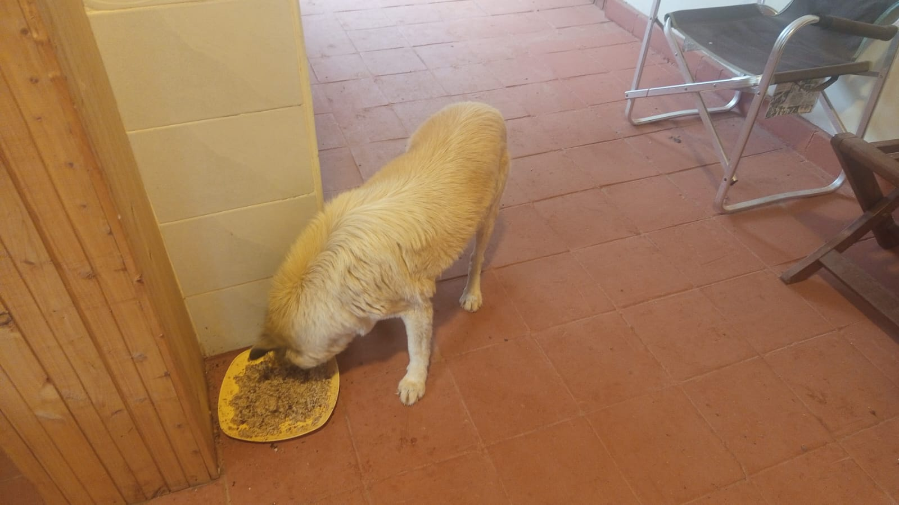

Mucheru World of Golf
Field civil works, agronomy earthwork, sub-surface drainage installation, sod delivery offloading, dam water replenishment, selective turf weeding, and teebox platform grading at Mucheru World of Golf on Wednesday, 11th November 2026 under the supervision of Mr. Gichuhi and Ken:
Golf Course Operational Highlights
Course engineering and agronomy teams delivered coordinated progress across drainage lines, putting surfaces, teebox platforms, and water storage. Ground crews installed, aligned, and leveled sub-surface PVC drainage pipes at Green 1 and Green 6, setting fall gradients to ensure positive gravity water outflow directly toward Dam 1. Agronomy laborers loosened compacted red soil, spread, and graded smooth apron surrounds encircling Greens 11 and 12, creating uniform collars flush with the sand putting surfaces. Teebox launch platforms at Teeboxes 1 and 10 were leveled and smoothed following red soil loosening. A commercial lorry delivered a full truckload of fresh Kikuyu grass sod, which workers offloaded and staged along the course road for turfing. Freshwater replenishment remained active across all three course dams (Dam 1, Dam 2, Dam 3), while a dedicated one-woman crew continued selective hand-weeding across the established turf of Green 5.
- Drainage System Installation & Leveling (Greens 1 & 6): Ground laborers laid, assembled, and leveled orange PVC drainage pipe runs at Greens 1 and 6, checking invert gradients to guarantee smooth gravity runoff into Dam 1.
- Apron Soil Loosening & Leveling (Greens 11 & 12): Agronomy workers loosened compacted red soil and graded smooth apron collars around Greens 11 and 12 to prepare uniform perimeters for grass planting.
- Teebox Platform Surface Leveling (Teeboxes 1 & 10): Field crews raked and smoothly leveled loosened red soil across the elevated launch platforms of Teeboxes 1 and 10 to establish even grades.
- Kikuyu Grass Sod Delivery (1 Lorry): A commercial Mitsubishi lorry delivered a full truckload of fresh Kikuyu grass sod, which crews offloaded and stacked neatly beside the track under acacia trees.
- Continuous Water Inflow Across All Course Dams: Gravity supply pipelines actively delivered freshwater into Dam 1, Dam 2, and Dam 3 to maintain full irrigation reservoir storage capacity.
- Dedicated Green 5 Selective Hand-Weeding: A one-woman crew continued hand-weeding across the green turf and red soil collar of Green 5, clearing weeds into collection buckets to protect grass purity.
Field video recording documenting Wednesday, 11th November 2026 operations at Mucheru World of Golf:
Field video recording capturing daily course civil works, drainage system installation, apron soil loosening, teebox leveling, and kikuyu grass delivery at Mucheru World of Golf on Wednesday, 11th November 2026.
18-hole putting green status audit tracking sub-surface drainage, river sand rootzone layering, red soil apron shaping, and turf readiness as of November 11, 2026:
| Green | Current Technical & Agronomic State | Milestone Status |
|---|---|---|
| Green 1 Today | Drainage system pipes installed and leveled to ensure smooth gravity water flow (Nov 11). | Drainage Installed |
| Green 2 | Pop-up sprinklers operational with pressurized spray coverage actively watering green (Oct 28). | Pop-Ups Functional |
| Green 3 | Apron red soil loosened, leveled, and shaped in readiness for grass planting (Nov 8). | Apron Leveled & Shaped |
| Green 4 | Apron red soil loosened, leveled, and shaped in readiness for grass planting (Nov 8). | Apron Leveled & Shaped |
| Green 5 Today | Selective hand-weeding continued across green turf by dedicated 1-woman crew (Nov 11). | Turf Weeding Ongoing |
| Green 6 Today | Drainage system pipes installed and leveled to ensure smooth gravity water flow to Dam 1 (Nov 11). | Drainage Installed |
| Green 7 | Red soil apron loosened and leveled around green in readiness for grass planting (Nov 9). | Apron Loosened & Leveled |
| Green 8 | Apron red soil loosened, leveled, and shaped in readiness for grass planting (Nov 8). | Apron Leveled & Shaped |
| Green 9 | River sand hauled from stockpiles to Greens 12 and 16 for rootzone layering (Oct 29). | River Sand Hauled |
| Green 10 | Drainage pipe trench backfilled with soil after confirming water outflow works (Nov 8). | Drainage Backfilled |
| Green 11 Today | Apron red soil loosened and leveled around green in readiness for grass planting (Nov 11). | Apron Loosened & Leveled |
| Green 12 Today | Apron red soil loosened and leveled around green in readiness for grass planting (Nov 11). | Apron Loosened & Leveled |
| Green 13 | Apron red soil loosened, leveled, and shaped in readiness for grass planting (Nov 10). | Apron Leveled & Shaped |
| Green 14 | Apron red soil loosened, leveled, and shaped in readiness for grass planting (Nov 10). | Apron Leveled & Shaped |
| Green 15 | Red soil apron loosened and leveled around green in readiness for grass planting (Nov 9). | Apron Loosened & Leveled |
| Green 16 | Red soil apron loosened and leveled around green in readiness for grass planting (Nov 9). | Apron Loosened & Leveled |
| Green 17 | Apron red soil loosened, leveled, and shaped in readiness for grass planting (Nov 10). | Apron Leveled & Shaped |
| Green 18 | River sand applied to unapplied segments and leveled across putting green bed (Nov 5). | River Sand Applied |
18-hole championship teebox status audit tracking launch platform shaping, red soil leveling, and planting readiness as of November 11, 2026:
| Teebox | Current Technical & Earthwork State | Platform Status |
|---|---|---|
| Tee 1 Today | Platform surface red soil leveled and smoothed after loosening in readiness for planting (Nov 11). | Red Soil Leveled |
| Tee 2 | Red soil applied halfway across platform; lateral pipe trenches backfilled (Oct 27). | Red Soil Halfway |
| Tee 3 | Red soil applied, spread, and leveled across platform; lateral pipe trenches covered (Oct 27). | Red Soil Leveled |
| Tee 4 | Plumber completed maintenance and repairs on electric irrigation solenoid valve (Nov 10). | Solenoid Repaired |
| Tee 5 | Big drainage trench near teebox leveled and shaped for proper gravity water flow (Nov 6). | Trench Leveled & Shaped |
| Tee 6 | Unwanted rocks, stones, and surface debris cleared around teebox platform (Nov 6). | Rocks & Debris Cleared |
| Tee 7 | Both teebox platforms raked smooth to clear tiny rocks and pebbles in readiness for planting (Nov 7). | Raked for Planting |
| Tee 8 | Unwanted rocks, stones, and surface debris cleared around teebox platform (Nov 6). | Rocks & Debris Cleared |
| Tee 9 | Surplus red soil hauled to Teebox 7 for platform shaping and surface leveling (Oct 29). | Red Soil Hauled |
| Tee 10 Today | Platform surface red soil leveled and smoothed after loosening in readiness for planting (Nov 11). | Red Soil Leveled |
| Tee 11 | Platform surface red soil leveled and smoothed after loosening in readiness for planting (Nov 10). | Red Soil Leveled |
| Tee 12 | Platform surface red soil leveled and smoothed after loosening in readiness for planting (Nov 10). | Red Soil Leveled |
| Tee 13 | Surface leveling ongoing across platform following red soil loosening (Nov 9). | Leveling Ongoing |
| Tee 14 | Red soil loosened and platform leveled in readiness for grass planting (Nov 8). | Red Soil Leveled |
| Tee 15 | Red soil loosened and platform leveled in readiness for grass planting (Nov 8). | Red Soil Leveled |
| Tee 16 | Unwanted rocks, stones, and surface debris cleared around teebox platform (Nov 6). | Rocks & Debris Cleared |
| Tee 17 | Pop-up sprinkler heights checked and adjusted flush below teebox platform level (Nov 2). | Sprinkler Height Adjusted |
| Tee 18 | Irrigation pipe trenches excavated across platform along marked survey lines (Oct 26). | Pipe Trenches Dug |
Course-Wide Agronomy & Engineering Synthesis
Course Agronomy & Earthwork Milestones: Sub-surface drainage pipe systems were installed and leveled at Green 1 and Green 6 to maintain unhindered gravity water flow toward Dam 1; rich red soil aprons were loosened, spread, and leveled around Greens 11 and 12 in readiness for grass planting; one lorry delivery of fresh Kikuyu grass sod was offloaded and staged; a one-woman crew continued selective hand-weeding across Green 5 turf; and launch platforms at Teeboxes 1 and 10 were leveled and smoothed after red soil loosening.
Hydraulic & Water Management: Gravity water replenishment continued steadily across all course reservoirs (Dam 1, Dam 2, and Dam 3) with water inlets active, ensuring continuous water security for the upcoming irrigation and planting phases.
Sequential photographic field documentation showing Dam 1, Dam 2, and Dam 3 continuous water replenishment, Kikuyu grass sod delivery and staging, Green 1 and Green 6 drainage pipe installation and leveling, red soil apron loosening and leveling on Greens 11 and 12, Teebox 1 platform earthwork, and Green 5 selective turf weeding on Wednesday, 11th November 2026:

Dam 1 — High-Angle Aerial Reservoir Water Level
Aerial drone view of Dam 1 reservoir lined with black geomembrane, showing steady freshwater inflow and basin water storage.

Dam 1 — Reservoir Water Replenishment Inflow
Ground perspective of Dam 1 showing water accumulating across the geomembrane lined reservoir bed under continuous gravity inflow.

Dam 2 — Aerial View of Reservoir & Central Island
High-angle aerial drone view of Dam 2 reservoir showing the geomembrane lining, central vegetated island, and rising water levels.

Dam 2 — Water Accumulation Around Reservoir Island
Ground-level view of Dam 2 lined reservoir showing clean water accumulating around the central island from the active inflow line.

Dam 3 — Serpentine Water Storage Reservoir Inflow
Aerial perspective of Dam 3 filled with clean freshwater reflecting the sky, with adjoining fairway terrain and geomembrane lining.

Course Agronomy — Lorry Delivery of Kikuyu Grass Sod
Commercial Mitsubishi lorry (KCE 040A) parked on site with crew members offloading freshly harvested Kikuyu grass sod from the truck bed.

Course Agronomy — Staging Kikuyu Grass Sod for Planting
Ground laborers offloading and stacking thick rectangular sods of Kikuyu grass along the verge beneath acacia trees in readiness for planting.

Green 1 Drainage — Pipe Trench Excavation & Leveling
Workers using shovels to excavate, adjust, and level the drainage pipe trench near the wire boundary fence to ensure gravity flow.

Green 1 & 6 Drainage — Pipe Assembly & Invert Alignment
Ground crew aligning orange PVC drainage pipes, fittings, and connectors in the trench to establish continuous gravity water runoff toward Dam 1.

Putting Green Aprons — Red Soil Loosening & Shaping
Ground crew of eight laborers using shovels and rakes to loosen, spread, and grade rich red soil around the sand putting green perimeter.

Green 12 Apron — Leveled Red Soil Collar Perimeter
Ground view of Green 12 showing the smooth sand putting surface bordered by the newly loosened and leveled red soil apron ring ready for grass.

Teebox 1 — Aerial Perspective of Red Soil Platform Leveling
Aerial drone view of Teebox 1 showing workers using rakes and tools to smoothly level rich red soil across the playing platform after loosening.

Teebox 1 — Platform Surface Grading & Shaping
Ground view of the elevated Teebox 1 launch platform showing laborers raking and grading the loosened red soil to establish an even surface.

Green 5 — Aerial Drone View of Selective Hand-Weeding
High-angle aerial drone view of Green 5 displaying the vibrant green putting turf and collar, with a dedicated worker weeding near the boundary line.

Green 5 — One-Woman Crew Hand-Weeding Turf Edge
Dedicated one-woman crew hand-weeding invasive weeds from the red soil collar bordering the established grass of Green 5 with a collection bucket.

Green 5 — Turf Weed Management & Grass Purity
Wide ground perspective across the green turf of Green 5 showing ongoing hand-weeding along the perimeter to maintain grass quality.
Chaka Farms
Commercial dairy production, dam aquatic plant management, compound lawn maintenance, and canine behavioral conditioning at Chaka Farms on Wednesday, 11th November 2026:
Farm Operational Highlights
Dairy production logged by Kamandau yielded 12.0 Litres gross harvest (7.0L morning + 5.0L evening), 100% accounted for in Litres through 11.0 Litres commercial sales (6.0L morning + 5.0L evening) and 1.0 Litre internal farm allocations (0.5L Gladys staff ration + 0.5L Maasai). Dam reservoir maintenance advanced under Ken's supervision as workers cut and cleared overgrown reeds and water plants from the dam bank that were encroaching onto the central island. Margaret and Monica executed thorough hand-weeding across the lawn grass and golden hedge perimeter adjacent to Gate B. Willy directed morning kennel hygiene washing, paw command drills, three daily off-leash walking sessions across morning, afternoon, and evening, morning socialization with Logan and Coby, and structured kennel manners conditioning.
- 100% Quantitative Reconciliation of 12.0 Litre Dairy Harvest: Morning (7.0L) and evening (5.0L) milking produced 12.0 Litres gross harvest, fully accounted for by 11.0 Litres commercial sales, 0.5 Litres Gladys staff ration, and 0.5 Litres Maasai internal allocation with zero discrepancy.
- Dam Aquatic Vegetation Removal & Island Clearing: Under Ken's oversight, workers cut and cleared overgrown reeds and water plants along the dam bank that were encroaching onto the island.
- Lawn Grass & Hedge Weeding Near Gate B: Margaret and Monica performed thorough hand-weeding along the lawn grass verge and golden hedge perimeter near Gate B and the white ranch fence.
- Canine Stall Hygiene & Paw Command Drills: Willy completed thorough morning washing of all dog kennel stalls and conducted responsive paw command drills.
- Triple Daily Off-Leash Walking & Morning Socialization: Handlers completed three off-leash walking and exercise sessions across morning, afternoon, and evening, alongside morning socialization for Logan and Coby.
- Kennel Manners Conditioning Drills: Handlers reinforced crate threshold manners, calm waiting, and controlled kennel entry and exit routines.
Official milking production and distribution ledger for Wednesday, 11th November 2026, recording gross yields, commercial dispatches, and internal farm allocations:
| Session / Disbursement Channel | Morning Yield | Evening Yield | Daily Total |
|---|---|---|---|
| Commercial Milk Sales (Dispatched) | 6.0 Litres | 5.0 Litres | 11.0 Litres |
| Internal Farm Allocation — Gladys | 0.5 Litres | 0.0 Litres | 0.5 Litres |
| Internal Farm Allocation — Maasai | 0.5 Litres | 0.0 Litres | 0.5 Litres |
| Total Volume Accounted For | 7.0 Litres | 5.0 Litres | 12.0 Litres (100% Reconciled) |
Dairy Accounting & Farm Reconciliation Note
Total gross cow milk harvested of 12.0 Litres (7.0L morning + 5.0L evening) is 100% accounted for by 11.0 Litres dispatched for commercial sales (6.0L morning sale + 5.0L evening sale) and 1.0 Litre in routine internal farm disbursements (0.5L staff allocation to Gladys + 0.5L internal allocation to Maasai). In compliance with reporting standards, all milk figures are strictly measured and displayed in Litres (never Kilograms), and internal disbursements are fully reconciled with zero numerical discrepancy.
Kennel sanitation, behavioral conditioning drills, off-leash exercise schedules, dam vegetation clearing, and Gate B lawn maintenance on Wednesday, 11th November 2026:
Field video recording capturing structured kennel manners training, crate threshold patience, and calm handler engagement at Chaka Farms on Wednesday, 11th November 2026.
- Kennel Hygiene & Stall Disinfection: Willy performed thorough morning washing and sanitizing across all dog kennel stalls to maintain clean living quarters.
- Paw Command Drills & Socialization: Handlers conducted responsive paw command drills and completed morning socialization sessions with Logan and Coby.
- Triple Daily Off-Leash Walking Sessions: Handlers completed three off-leash walking and exercise routines across morning, afternoon, and evening to promote canine wellness.
- Kennel Manners Conditioning: Handlers reinforced crate threshold patience, calm waiting, and controlled kennel entry and exit routines.
- Dam Bank Aquatic Vegetation Clearing: Under Ken's oversight, workers cut back overgrown reeds along the dam bank spreading toward the island.
- Gate B Lawn & Hedge Hand-Weeding: Margaret and Monica weeded the grass lawn and golden hedge perimeter adjacent to Gate B.
Photographic field evidence documenting dam aquatic vegetation clearing, cut reeds along the bank, and lawn weeding near Gate B on Wednesday, 11th November 2026:

Aquatic Maintenance — Clearing Overgrown Reeds at Dam Bank
Ken overseeing a worker using a panga to cut down overgrown reeds and tall water plants along the dam bank spreading toward the island.

Dam Island Maintenance — Cut Water Vegetation Along Lawn
Tall reeds along the water's edge and cut aquatic vegetation laid along the grass slope during maintenance to clear the passage to the island.

Compound Care — Hand-Weeding Lawn Grass Near Gate B
Margaret and Monica weeding the lawn grass and golden hedge perimeter adjacent to Gate B and the white ranch fence.
Kabete Residence
Domestic pet care and evening feeding routines at Kabete Residence on Wednesday, 11th November 2026:
Residence Operational Highlights
Domestic pet nutrition and wellness routines progressed smoothly at Kabete Residence under the care of Njoki. Ajabu the Golden Retriever was served his wholesome, balanced evening dinner on his feeding plate indoors. Resident cats Reo, Mocha, and Aiko were all present together indoors, dining peacefully from their individual stainless-steel food bowls.
- Domestic Pet Nutrition & Feeding Oversight: Njoki oversaw evening feeding routines ensuring all resident animals received proper nutrition.
- Ajabu the Golden Retriever Evening Dinner: Ajabu enjoyed his fresh, balanced evening dinner served on the tiled floor indoors.
- Resident Cats Evening Dining (Reo, Mocha & Aiko): All three resident cats—Reo, Mocha, and Aiko—dined peacefully indoors from individual stainless-steel food bowls.
- Indoor Domestic Animal Comfort: All pets were accommodated indoors in a clean, calm, and comfortable setting.
- Clean Feeding Station Maintenance: Feeding areas, water bowls, and food plates were cleaned and properly maintained following mealtime.
Photographic field documentation showing domestic pet feeding routines for Ajabu the Golden Retriever and resident cats Reo, Mocha, and Aiko on Wednesday, 11th November 2026:

Domestic Pet Care — Ajabu Evening Dinner Indoors
Ajabu the Golden Retriever enjoying his evening meal served on his plate on the tiled floor indoors.

Domestic Pet Care — Resident Cats Dining Indoors
Resident cats Reo, Mocha, and Aiko eating their evening meals together indoors from individual stainless-steel bowls on the tiled floor.